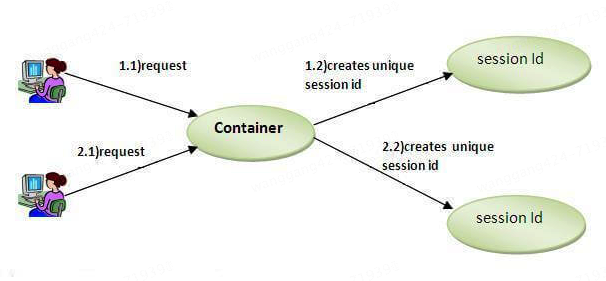
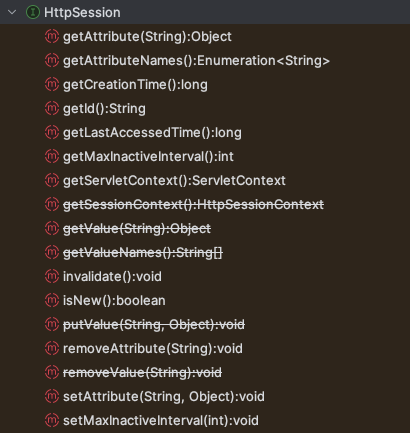

本书作者：测试开发刚哥，文章版权归个人所有，未经授权请勿转载。
Session是什么
在Web应用程序中，Session（会话）是用于在多个请求之间保持用户状态的一种机制。由于HTTP协议是无状态的，每个请求都是独立的，服务器无法直接知道两个请求是否来自同一个用户。Session通过在服务器端存储用户状态信息，并在客户端使用一个唯一的Session ID来标识用户，从而实现状态保持。
Session工作原理如下：
- 创建Session：当用户第一次访问Web应用程序时，服务器创建一个新的Session，并生成一个唯一的Session ID
- 发送Session ID：服务器将Session ID发送给客户端，通常通过HTTP响应头中的Set-Cookie字段
- 存储Session ID：客户端浏览器将Session ID存储在Cookie中，并在后续请求中将其发送回服务器
- 识别Session：服务器通过接收到的Session ID识别用户的会话，并从服务器端存储中获取相应的Session数据
四种主要技术
- Cookies
- Hidden Form Field
- URL Rewriting
- HttpSession
1. Cookies（Cookie）
Cookie是存储在客户端浏览器中的小数据片段。它们会随着每个HTTP请求一起发送到服务器，可以用来存储会话标识符。
工作原理
- 当用户第一次访问网站时，服务器生成一个唯一的会话ID，并将其作为Cookie发送到客户端浏览器
- 浏览器存储这个Cookie，并在后续请求中将其发送回服务器
- 服务器使用Cookie中的会话ID来检索用户的会话数据

优点
- 对用户透明
- 由浏览器自动管理
- 可以存储少量数据
缺点
- 用户可以在浏览器中禁用Cookie
- 存储容量有限（通常每个Cookie大约4KB）
- 如果处理不当，可能存在安全问题（例如Cookie盗窃）
示例
import javax.servlet.http.Cookie;
// 在Servlet中设置Cookie
Cookie sessionCookie = new Cookie("JSESSIONID", session.getId());
sessionCookie.setMaxAge(30 * 60); // 30分钟
response.addCookie(sessionCookie);
// 在Servlet中检索Cookie
Cookie[] cookies = request.getCookies(); // 从请求获取Cookie
if (cookies != null) {
for (Cookie cookie : cookies) {
if ("JSESSIONID".equals(cookie.getName())) {
String sessionId = cookie.getValue();
// 使用会话ID检索会话数据
}
}
}
Cookie有两种类型：
-
非持久性Cookie（Non-persistent cookie），也称为会话Cookie（Session cookie），仅在浏览器会话期间有效。当用户关闭浏览器时，这些Cookie会被自动删除。适用于需要在用户会话期间保持状态的信息，如购物车内容、临时会话ID等。
-
持久性Cookie（Persistent cookie），在浏览器会话结束后仍然有效，直到达到指定的过期时间或被用户手动删除。它们存储在客户端的硬盘上。适用于需要在多个会话之间保持状态的信息，如记住用户登录状态、用户偏好设置等。
2. 隐藏表单字段（Hidden Form Field）
隐藏表单字段用于在HTML表单中存储会话数据。当表单提交时，这些数据会发送到服务器。
工作原理
- 服务器生成一个唯一的会话ID，并将其作为隐藏字段包含在HTML表单中
- 当用户提交表单时，隐藏字段会随表单数据一起发送到服务器
- 服务器从隐藏字段中检索会话ID，并使用它来访问用户的会话数据
优点
- 实现简单
- 不依赖于浏览器设置（例如Cookie）
缺点
- 仅适用于表单提交
- 需要修改所有表单以包含隐藏字段
- 不适用于跨多个页面跟踪会话（没有表单的页面）
示例
<form action="submitForm" method="post">
<input type="hidden" name="sessionId" value="<%= session.getId() %>">
<!-- 其他表单字段 -->
<input type="submit" value="提交">
</form>
3. URL重写（URL Rewriting）
URL重写涉及将会话ID附加到每个请求的URL中。这种技术确保会话ID随每个请求一起发送到服务器。
工作原理
- 服务器生成一个唯一的会话ID，并将其作为查询参数附加到URL中
- 会话ID包含在服务器生成的所有后续URL中
- 服务器从URL中检索会话ID，并使用它来访问用户的会话数据
优点
- 即使禁用Cookie也能工作
- 可以跨多个页面跟踪会话
缺点
- URL变得更长且不易读
- 需要修改所有URL以包含会话ID
- 如果会话ID暴露在URL中，可能存在安全风险
示例
// 生成带有会话ID的URL
// http://localhost:8080/myapp/nextPage.jsp;jsessionid=1234567890ABCDEF1234567890ABCDEF
String url = response.encodeURL("nextPage.jsp");
// 从URL中检索会话ID
String sessionId = request.getParameter("jsessionid");
4. HttpSession
HttpSession接口提供了一种内置的会话跟踪机制。它抽象了底层的会话跟踪技术（例如Cookie、URL重写），并提供了一个简单的API来管理会话数据。
工作原理
- 服务器为每个用户会话创建一个HttpSession对象
- 会话ID由服务器管理，可以存储在Cookie或URL中
- HttpSession对象提供了存储和检索会话属性的方法

优点
- 简单且方便的API
- 抽象了底层的会话跟踪机制
- 自动处理会话的创建、过期和失效
缺点
- 依赖于服务器的会话管理实现
- 可能需要额外配置以实现会话持久化和集群
示例
// 创建或检索会话
HttpSession session = request.getSession();
// 在会话中存储属性
session.setAttribute("username", "JohnDoe");
// 从会话中检索属性
String username = (String) session.getAttribute("username");
// 使会话失效
session.invalidate();
在多数情况下，使用HttpSession是最方便和有效的方法，因为它抽象了底层的会话跟踪机制，并提供了一个简单的API来管理会话数据。
为什么request.getSession()能拿到session？
HttpSession抽象了底层的会话跟踪技术，实际上请求的sessionid还是通过cookie或url，从客户端发给服务器的，比如cookie，服务器响应（第一次请求时创建会话）：
HTTP/1.1 200 OK
Set-Cookie: JSESSIONID=1234567890ABCDEF1234567890ABCDEF; Path=/; HttpOnly
Content-Type: text/html
客户端请求（后续请求中包含sessionid）：
GET /myapp/urlRewriting HTTP/1.1
Host: example.com
Cookie: JSESSIONID=1234567890ABCDEF1234567890ABCDEF

HttpSession是一个封装好的接口，提供了一组方法，简化了Session管理。
参考资料：
https://www.javatpoint.com/session-tracking-in-servlets
ChatGPT